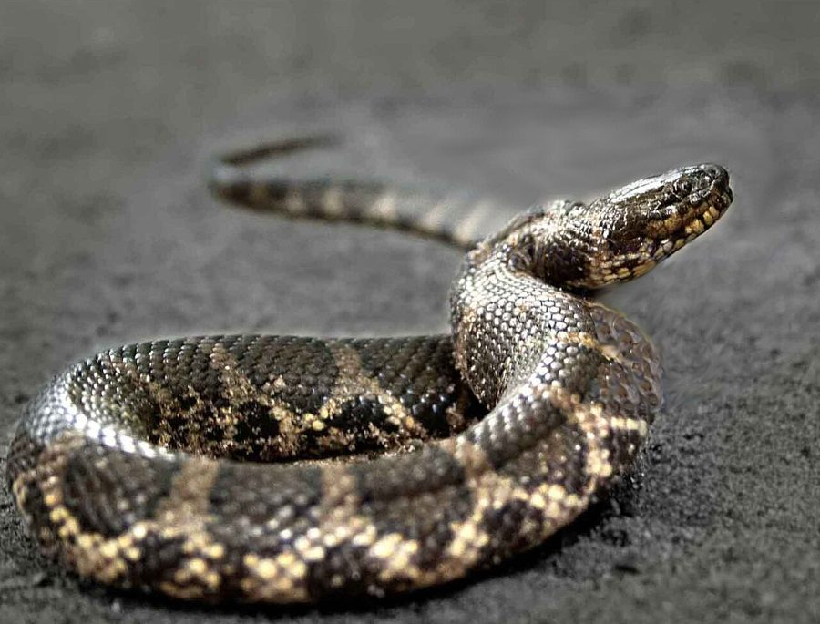

सीबोल्ड वॉटर स्नेकSiebold's Water Snake
Ferania sieboldii · Colubridae · REP-0035

- Scientific name वैज्ञानिक नाम
- Ferania sieboldii (Schlegel, 1837)
- Family कुल
- Colubridae
- Hindi हिंदी
- सीबोल्ड वॉटर स्नेक
- Local names स्थानीय नाम
- siebolds water snake, snake
- Status here यहाँ की स्थिति
- native
- Movement आवागमन
- Resident, here all year
- Known from कहाँ दर्ज
- Others have published records from the Basti–Ayodhya districts बस्ती–अयोध्या के ज़िलों से दूसरों के प्रकाशित अभिलेख
- IUCN IUCN
- LC
- Review समीक्षा
- audited and independently read
When to look कब देखें
Present all year. साल भर मौजूद।
Tell it apart from इनसे अलग पहचानें
सीबोल्ड वॉटर स्नेक / Siebold's Water Snake
Ferania sieboldii (Schlegel, 1837) — Colubridae
सीबोल्ड वॉटर स्नेक — बड़ी नदियों और जलाशयों में रहने वाला एक पूरी तरह जलीय, विषरहित सांप जो मछलियों का शिकार करता है। इसका शरीर गहरे भूरे या जैतून रंग का होता है और पूंछ बिल्कुल चपटी (compressed) होती है, जो इसे पानी में तेजी से तैरने में मदद देती है। पूर्वी उत्तर प्रदेश की घाघरा नदी और अन्य बड़े जलस्रोतों में यह मिलता है, पर बहुत दुर्लभ है और शायद ही कभी देखा जाता है क्योंकि यह अधिकतर गहरे पानी में रहता है।
Quick Identification त्वरित पहचान
| Feature | Description |
|---|---|
| Form | Fully aquatic; body moderately stout; head slightly flattened; tail distinctly compressed laterally |
| Colour | Uniform dark brown, olive, or greyish-brown; no striking markings |
| Scales | Smooth to weakly keeled dorsal scales |
| Head | Flattened; eyes and nostrils positioned dorsally for submersed swimming |
| Eyes | Medium-sized; round pupil adapted for aquatic hunting |
| Tail | Strongly compressed laterally; occupies 25–30% of total length |
| Behaviour | Strictly aquatic; rarely seen on land; extremely shy and wary |
Field tip: A dark, sturdy water snake found only in large rivers and deep water bodies. The laterally compressed tail and streamlined body are distinctive. It is not considered dangerous to people and will retreat into deeper water if approached. Search in large streams and reservoirs during early morning or late afternoon.
Morphology आकारिकी
Biometrics (typical measurements for specimens from the Gangetic system):
| Measurement | Range |
|---|---|
| Total length | 80–130 cm |
| Tail length | 25–40 cm |
| Weight | 400–800 g |
Dorsal coloration: Uniform dark brown, olive-brown, or greyish-brown above. The ventral surface is lighter, pale yellow or cream, often with dark spots at scale edges or darker posteriorly. No prominent longitudinal stripes or transverse bands. Some individuals show faint lighter coloration on head.
Scales: Dorsal scales are mostly smooth or weakly keeled, arranged in 19–21 rows at midbody. The anal scale is divided.
Body adaptations: The body is more robust than many aquatic snakes, adapted for diving and bottom feeding in flowing water. The head is slightly dorsoventrally flattened. The tail is strongly compressed laterally, forming an effective rudder.
Dentition: Rear-fanged: enlarged grooved teeth at the back of the upper jaw deliver a mild venom used on fish and frogs. Like other homalopsid water snakes it is mildly venomous and not considered dangerous to people; do not handle it.
Behaviour & Ecology व्यवहार और पारिस्थितिकी
Strictly aquatic. Siebold's Water Snake is virtually never found on land and spends its entire life in water.
- Habitat preference: Prefers deep, flowing water of rivers and larger water bodies. Found in the main channels and deeper pools of large streams.
- Hunting behaviour: Actively hunts by probing the bottom and crevices of riverbeds for fish. Feeds primarily on bottom-dwelling fish species.
- Swimming: Excellent swimmer with the compressed tail providing efficient propulsion. Can dive to considerable depths.
- Rarity: Seldom observed due to its preference for deep water. More frequently captured in fishing nets than seen in the wild.
- Defensive behaviour: Extremely wary; retreats rapidly into deeper water when disturbed. Bites only if cornered or handled carelessly.
Life Cycle / Phenology जीवन चक्र
| Season | Event |
|---|---|
| April–May | Pre-breeding season; snakes move to certain river sections |
| June–August | Breeding season; coincides with monsoon flooding; live-bearing species |
| August–September | Gravid females deliver live young in deep water refuges |
| Year-round | Continuous feeding and growth; activity slightly reduced during cold months |
Host Plants or Prey आहार
Piscivorous (fish-eating):
- Primary prey: Small to medium-sized fish, particularly bottom-dwelling species and catfish
- Secondary prey: Occasionally small crustaceans or aquatic invertebrates
- Hunting method: Probes riverbed crevices and vegetation; grips prey with curved teeth; swallows whole
Predators / Natural Enemies शत्रु
- Predatory birds: Fishing eagles, cormorants, and large herons hunt from the water surface
- Larger snakes: Indian Cobra and Common Krait may prey on smaller individuals if encountered
- Freshwater crocodile: In areas where both occur, may prey on smaller snakes
- Humans: Previously hunted for skin; now protected under law
Agricultural / Human Relevance कृषि प्रासंगिकता
Fish predator role. Siebold's Water Snake is part of the aquatic food web of the Gangetic river system, helping regulate populations of smaller fish species. It is not considered dangerous to humans and is protected under the Wildlife (Protection) Act 1972. Fishermen occasionally capture them in nets but typically release them unharmed. No agricultural impact is recorded.
Expected Locally स्थानीय रूप से अपेक्षित
Not a field record. Written from published accounts for eastern Uttar Pradesh. No confirmed local sighting yet — if you have seen it, that is what the atlas needs.
अभी तक स्थानीय पुष्टि नहीं। यह विवरण प्रकाशित स्रोतों से है, किसी अवलोकन से नहीं।
This species is NOT a field record. The distribution below is based on published sources describing where Siebold's Water Snakes should be looked for in the Basti–Ayodhya region and where they have been recorded by herpetologists.
यह प्रजाति स्थानीय अवलोकन नहीं है। यह विवरण प्रकाशित स्रोतों से है।
Expected in the Ghaghra and Rapti river systems, particularly in deep pools and main channels where bottom-dwelling fish are abundant. GBIF holds published records from the wider Awadh–Purvanchal plain, none yet from Basti–Ayodhya. Most likely to be encountered by fishermen operating nets in larger rivers rather than by casual observers. The species is so aquatic that sightings are rare even where populations exist. The first local record would be a specimen documented by herpetologists or a clear photograph showing the distinctive laterally compressed tail and aquatic adaptations with location and date.
Distribution वितरण
Global range: Distributed across South and Southeast Asia from Pakistan through India to Myanmar and Thailand, typically in larger river systems.
In India: Found in major river systems across peninsular India; particularly common in the Gangetic system.
In Uttar Pradesh: Resident in the Ghaghra, Rapti, and Ghaghara river systems and larger reservoirs; rarer than related species.
In Basti district / eastern UP: Occurs in the main channels of the Ghaghra and Rapti rivers; status uncertain; likely rare and restricted to deep water habitats.
Research Questions शोध प्रश्न
- What is the population status and distribution of Ferania sieboldii in the Ghaghra-Rapti river system? / घाघरा-राप्ती नदी तंत्र में इस सांप की जनसंख्या और वितरण क्या है?
- Does the species show any seasonal migration or movement in response to monsoon flooding and water discharge variations?
- What is the diet composition and foraging strategy of Ferania sieboldii in flowing versus static water habitats?
- क्या बाँधों और बराजों के निर्माण से इस सांप के आवास और जनसंख्या पर प्रभाव पड़ा है?
- How do fishing practices and fish population dynamics affect the conservation status of this rare aquatic specialist?
- Can live-bearer reproductive strategy and clutch size be documented in this species across different river sections? (No equipment needed — check captured specimens.)
Similar Species मिलती-जुलती प्रजातियाँ
| Species | Key Difference | हिंदी | Field Rule | |
|---|---|---|---|---|
| [[painted_keelback\ | Painted Keelback]] (Xenochrophis cerasogaster) | Smaller (50–90 cm); bright yellow or orange longitudinal stripes; found in marshes and rice paddies, not deep rivers | चित्रित सांप | Painted is striped and found in shallow water; Siebold's is uniform colored in deep river channels. |
| [[checkered_keelback\ | Checkered Keelback]] (Xenochrophis piscator) | Larger (up to 120 cm); yellow-black checkered pattern all over body; keeled scales | डोडिया सांप | Checkered has distinctive yellow-black checkerboard pattern; Siebold's is uniformly dark. |
| Enhydris enhydris ([[rainbow_water_snake | Rainbow Water Snake]]) | Smaller (50–80 cm); bright yellow ventral surface with orange spots; keeled scales | इंद्रधनुष सांप | Rainbow has brightly colored belly; Siebold's has pale plain belly. |
Field rule: Any large, uniformly dark water snake in deep river channels is likely Siebold's Water Snake. The absence of stripes or checkering and the laterally compressed tail are the key identifiers.
Taxonomy & Classification वर्गीकरण
Original description. The species was described by Hermann Schlegel in 1837 as Coluber sieboldii based on specimens from Java and India. Type locality is Java. It was later recognized in the Gangetic fauna and placed in the genus Ferania .
Subspecies. Monotypic — no subspecies are currently recognised.
Family and order placement. Order Squamata, suborder Serpentes, family Colubridae, subfamily Natricinae. The genus Ferania contains one or two highly aquatic Asian water snakes.
Phylogenetic notes. Ferania sieboldii represents a highly derived aquatic form within Natricinae, with specializations for deep-water foraging in large river systems.
IUCN status rationale. Listed as Least Concern (LC) globally because of its wide distribution in large river systems. However, localized populations may be threatened by dam construction, river modification, and water pollution. In India, it is protected under the Wildlife (Protection) Act 1972.
Photo Gallery फोटो गैलरी
No photos yet — add field photos to media/species/siebolds_water_snake/ and run node scripts/sync_photos.js.
Wanted photos:
- Dorsal view in water
- Ventral surface detail
- Head showing eye position
- Tail showing lateral compression
- Characteristic aquatic posture
References संदर्भ
- Schlegel, H. (1837). Essai sur la physionomie des serpens. Part 1. Natuurkundige Verhandelingen over de Landen-Instellingen Uitgegeven door het Koninklijk-Nederlandsch Instituut, 's-Gravenhage.
- Smith, M. A. (1943). The Fauna of British India, Ceylon and Burma: Reptilia and Amphibia. Vol. 3 — Serpentes. Taylor & Francis, London.
- Whitaker, R. & Captain, A. (2004). Snakes of India: The Field Guide. Draco Books, Chennai.
- Gower, D. J., et al. (2005). Molecular phylogeny and chronology of Natricinae (Serpentes, Colubridae). Zoologica Scripta, 34(3): 233–246.
- IUCN SSC Snake and Lizard Specialist Groups (2024). Ferania sieboldii. IUCN Red List of Threatened Species.
- GBIF Occurrence Data — Ferania sieboldii, South Asia (2026). GBIF taxon key: [to be filled].
Source file: species/fauna/reptiles/siebolds_water_snake.md